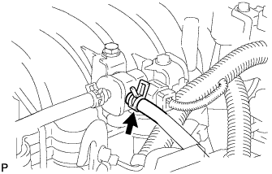
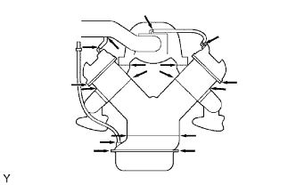

EMISSION CONTROL SYSTEM (w/ Secondary Air Injection System) > ON-VEHICLE INSPECTION |
| 1. CHECK PURGE VSV |
Connect the intelligent tester to the DLC3.
Remove the V-bank cover (Click here).
 |
Disconnect the hose (connected to the canister) from the purge VSV.
Start the engine and turn the tester main switch ON.
Enter the following menus: Powertrain / Engine and ECT / Active Test / Activate the VSV for EVAP Control.
| Tester Operation | Specified Condition |
| EVAP VSV: OFF | Purge VSV has no suction |
| EVAP VSV: ON | Purge VSV has suction |
Connect the hose (connected to the canister) to the purge VSV.
Install the V-bank cover (Click here).
| 2. INSPECT FUEL CUT-OFF RPM |
Start and warm up the engine.
Open the throttle valve and keep the engine speed at 3000 rpm.
Use a sound scope to check for injector operating noise.
Check that when the accelerator pedal is released, injector operation noise stops momentarily and then resumes.
If the result is not as specified, check the injector, wiring and ECM.
| 3. VISUALLY INSPECT HOSES, CONNECTIONS AND GASKETS |
 |
Check that there are no cracks, leaks or damage.
| 4. CHECK HOSES AND CONNECTORS |
Visually check for loose connections, sharp bends or damage.
| 5. CHECK FUEL TANK ASSEMBLY |
Visually check for deformation, cracks or fuel leakage.